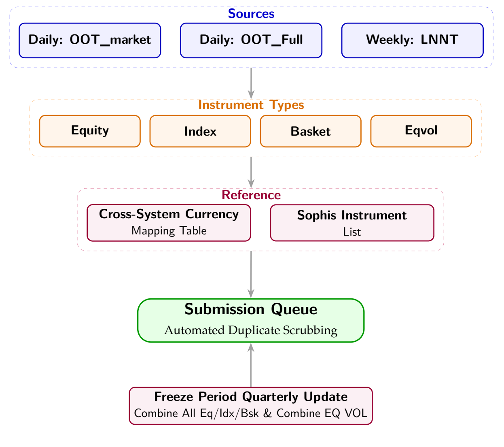

Scream
A modular workflow for the daily, weekly, ad-hoc and quarterly market-data requests that had outgrown separate scripts and manual handling.
Scream began as a small weekly database update. As request volume grew, the work expanded to include urgent setup requests, daily synchronization, large weekly uploads and quarterly re-uploads. Each instrument family came with its own rules, while inputs arrived in different formats and used inconsistent currency and instrument names across legacy systems.
I brought those paths into one framework with instrument-specific processing modules. The workflow normalizes incoming data with shared mapping tables, checks it against the master instrument list, and routes it through the right processing logic. For weekly uploads, it reads system error logs and removes already-existing tickers before the next attempt, preventing duplicate records from blocking an otherwise valid batch. Quarterly runs aggregate date-coded files, while defensive file naming prevents one request from overwriting another.

A shared submission queue connects these modules, while duplicate scrubbing and versioned output files protect the handoff into downstream systems. The quarterly path also handles freeze periods and full refreshes for equity, index, basket and equity-volatility data, so the same platform can serve routine updates and larger reconciliation cycles.
The combined workflow saves roughly 30 minutes each day, 30 minutes each week and two hours per quarterly cycle. It also reduced new-hire training from three weeks to one. The shared currency and instrument mappings now serve as reusable building blocks for other operational tools.